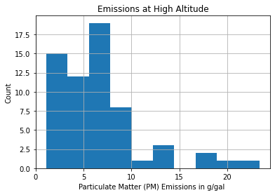
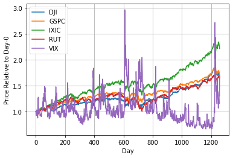
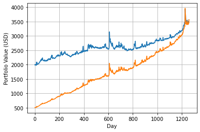

Manipulating Data with Pandas
Contents
Manipulating Data with Pandas#
Learning Objectives#
After studying this notebook, completing the activities, and asking questions in class, you should be able to:
Import and analyze data using Pandas
Read data from a text file
Loop over columns in Pandas array
Compute descriptive statistics with Pandas
Plot data stored in a Pandas dataframe
Working with Data Using Pandas#
The publisher contains all of the data for the examples and tables in our textbook. We’ll use many of these datasets to illustrate key concepts in class.
Let’s start with Tables 1.1 and 1.2 (pg. 21), which give particulate matter (PM) emissions in g/gal for 138 and 62 vehicles at low and high altitudes, respectively. Please take a moment to find those tables on the website.
Now let’s load the data into Python. In this class, we will use Pandas, which is a super popular and easy to use package/library/module for organizing and manipulating data. Here is a highly recommended 10 minutes to pandas getting started tutorial.
# load the Pandas library, give nickname 'pd'
import pandas as pd
# load numpy, give nickname 'np'
import numpy as np
# load matplotlib, give nickname 'plt'
import matplotlib.pyplot as plt
Loading and Inspecting Data#
The code below reads in the first text file.
low = pd.read_csv('../data/table1-1.csv')
This creates a Pandas dataframe, which is stored in the variable low. We can easily print its contents to the screen.
print(low)
PM
0 1.50
1 0.87
2 1.12
3 1.25
4 3.46
.. ...
133 4.63
134 2.80
135 2.16
136 2.97
137 3.90
[138 rows x 1 columns]
len(low)
138
The first row (vehicle) is numbered 0, which is perhaps not a surprise. We see there are 138 rows in the dataset, which matches what we expect: data for 138 vehicles at low altitude.
The output above is ugly. We can use the .head() and .tail() commands to look at only the first and last five entries.
low.head()
| PM | |
|---|---|
| 0 | 1.50 |
| 1 | 0.87 |
| 2 | 1.12 |
| 3 | 1.25 |
| 4 | 3.46 |
low.tail()
| PM | |
|---|---|
| 133 | 4.63 |
| 134 | 2.80 |
| 135 | 2.16 |
| 136 | 2.97 |
| 137 | 3.90 |
Home Activity
Load the high altitude data, which is stored in table1-2.csv into the Pandas dataframe high. Verify there are 62 rows. Use the head command to see the first few rows.
# Add your solution here
Number of rows = 62
| PM | |
|---|---|
| 0 | 7.59 |
| 1 | 6.28 |
| 2 | 6.07 |
| 3 | 5.23 |
| 4 | 5.54 |
# Removed autograder test. You may delete this cell.
Computing Summary Statistics#
Our example so far has only one column of data, named PM. We can access this column two ways:
low['PM']
0 1.50
1 0.87
2 1.12
3 1.25
4 3.46
...
133 4.63
134 2.80
135 2.16
136 2.97
137 3.90
Name: PM, Length: 138, dtype: float64
low.PM
0 1.50
1 0.87
2 1.12
3 1.25
4 3.46
...
133 4.63
134 2.80
135 2.16
136 2.97
137 3.90
Name: PM, Length: 138, dtype: float64
Pandas also makes it extremely easy to compute summary statistics and perform exploratory data analysis.
low.PM.describe()
count 138.000000
mean 3.714565
std 2.558040
min 0.250000
25% 1.472500
50% 3.180000
75% 5.265000
max 11.230000
Name: PM, dtype: float64
We will mathematically define the mean (a.k.a. average), standard deviation (std), minimum (min), maximum (max), and 25%-, 50%-, and 75%-ile (percentile) later this semester. The 50%-ile is also know as the median. Half of the observations are above the median and half are below.
Home Activity
Compute the mean (average) and median (50%-ile) for high altitude data. Store the results in Python variables high_average and high_median.
# Add your solution here
count 62.000000
mean 6.596452
std 4.518998
min 1.110000
25% 3.487500
50% 5.750000
75% 7.755000
max 23.380000
Name: PM, dtype: float64
# Removed autograder test. You may delete this cell.
Combining Pandas and Matplotlib#
Together, Pandas and Matplotlib make it easy to quickly visualize a dataset. The code below creates a histogram.
plt.hist(low.PM)
plt.xlabel("Particulate Matter (PM) Emissions in g/gal ")
plt.ylabel("Count")
plt.title("Emissions at Low Altitude")
plt.grid(True)
plt.show()

Each bin of the histogram shows the count (number) of vehicle with emissions between the left and right bound of the bin. For example, the third bin from the left shows that there are approximate 30 vehicles in the dataset with emissions between 2.2 and 3.8 g/gal.
Home Activity
Create a histogram for the high altitude data. Then determine the approximate number of vehicles with emissions between 0 and 3 g/gal. Store your answer in high_count. The upper limit of 3 g/gal is approximate. We want you to make a plot and interpret it.
# Add your solution here

# Removed autograder test. You may delete this cell.
Investment Strategies#
We will spend one-third to one-half of Class 3 working on an example to leverage our new Python skills.
The CSV (Comma Seperated Value) file Stock_Data.csv is the historical daily adjusted closing prices for five index funds:
Symbol |
Name |
|---|---|
GSPC |
S&P 500 |
DJI |
Dow Jones Industrial Average |
IXIC |
NASDAQ Composite |
RUT |
Russell 2000 |
VIX |
CBOE Volatility Index |
Getting Started#
Home Activity
Load the data into a Pandas dataframe named stocks. Then inspect the first 5 rows.
# Add your solution here
| DJI | GSPC | IXIC | RUT | VIX | |
|---|---|---|---|---|---|
| 0 | 14447.75000 | 1551.689941 | 3235.300049 | 945.849976 | 13.74 |
| 1 | 14559.65039 | 1563.770020 | 3252.479980 | 949.820007 | 12.77 |
| 2 | 14526.16016 | 1562.849976 | 3256.520020 | 950.239990 | 13.15 |
| 3 | 14578.54004 | 1569.189941 | 3267.520020 | 951.539978 | 12.70 |
| 4 | 14572.84961 | 1562.170044 | 3239.169922 | 938.789978 | 13.58 |
# Removed autograder test. You may delete this cell.
We can loop over the column names of the dataframe:
for c in stocks.columns:
print("The mean price of",c,"is",stocks[c].mean(),"dollars.")
The mean price of DJI is 18308.909006274822 dollars.
The mean price of GSPC is 2090.507513849881 dollars.
The mean price of IXIC is 4998.311674694996 dollars.
The mean price of RUT is 1220.7430421429708 dollars.
The mean price of VIX is 14.550937264495634 dollars.
This is extremely powerful. Let’s use a for loop to plot the price of each index fund relative to the first day on a single plot.
for c in stocks.columns:
plt.plot(stocks[c] / stocks[c][0],label=c)
plt.xlabel("Day")
plt.ylabel("Price Relative to Day-0")
plt.grid(True)
plt.legend()
plt.show()

Portfolio Calculator#
We want to create a computer program (function) that does the following:
Takes these historical prices, an initial investment amount, and daily investment amount as inputs.
On the first day in the dataset, splits the initial investment amount evenly among each of the index funds. Computes and records the number of shares purchased. Also records the value of the portfolio.
On the remain days, splits the daily investment amount evenly among each of the index funds. Computes and records the number of shares at the end of the day. Also records the value of the portfolio using the new prices.
After considering each day, plots the value of the portolio versus time.
Returns the portolio history which includes the number of shares and value for each day.
Class Activity
With a partner, write pseudocode for this computer program.
Class Activity
With a partner, use your pseudocode to complete the function below.
def portfolio(stock_data,initial_investment,daily_investment):
''' Compute and plot portfolio value
Assumptions:
We invest evenly across all available index funds
Arguments:
stock_data: Pandas dataframe containing historical stock prices
initial_investment: dollars invested at the start of our portfolio (float)
daily_investment: dollars invested at the end of each day (float)
Returns:
portfolio: Pandas dataframe containing the number of shares of each fund
and the value of the portfolio
Also:
Creates a (well labeled) plot of portfolio value versus time
'''
# determine the numbers of stocks
n = len(stock_data.columns)
### Create a dataframe to store the results
# Extract the names of the columns of 'stock_data', convert to list
c = stock_data.columns.values.tolist()
# Add 'Value' to the list
c.append("Value")
# Create new dataframe with the name number of rows as 'stock_data',
# the same columns as 'stock_data' plus 'Value', and filled with 0.0
portfolio = pd.DataFrame(0.0, index=range(len(stock_data)), columns=c)
# Add your solution here
return portfolio
Class Activity
Which is better? a) Invest $2000 on the first day and $0 each subsequent day or b) Invest $500 on the first day and $1.5 each subsequent day?
# Add your solution here

Discuss in a few sentences: